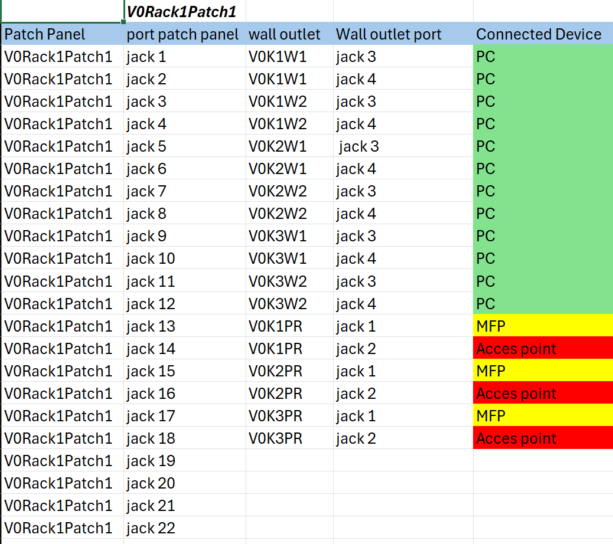
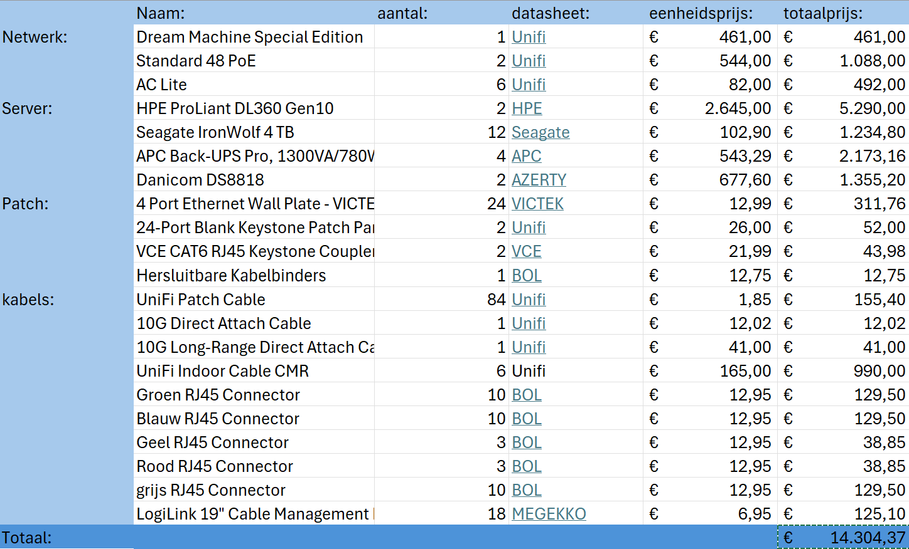

Project Webwiz
In dit project kregen we de taak om een bekabelingsplan te maken voor het bedrijf Webwiz. Hierbij kregen wij het bekabelings plan te zien van een ander bedrijf waar ze niet te vreden mee waren. Deze opdracht diende als een lang lopende taak voor het vak datacom en netwerken tijdens mijn oplijding op de AP hogeschool Antwerpen.
Brent De Potter
Patchplan
Het was ook zeer belangerijk om een goed een duidelijk patchplan te maken waardoor je gemakelijk kan weten welek kabel naar waar gaat. Hiervoor hebben we met een kleure code gewerkt waardoor je al snel kan weten aan de kleur van kabel naar wat voor een apparaat de kabel gaat. Voor dit patchplan werd er gebruik gemaak van 2 48 poorten switchen gebruikt waardoor alles zeer compact kon blijven.
Aankooplijst
Bij de Aankooplijst hebben we voornamelijk gebruik gemaakt van Unifi voor de opbouw van het netwerk met servers van HPE en verschillende UPS'en van APE. Voor de prijs iets lager te houden hebben we gekozen om grote rollen netwerkkabels te kopen in plaats van allemaal verschillende losse kabels. In deze aankoopijst komt er letterlijk alles aan bod dat nodig is voor het netwerk van Webwiz waardoor de prijs toch tot een zekere € 14.304,37 komt.
Brent De Potter